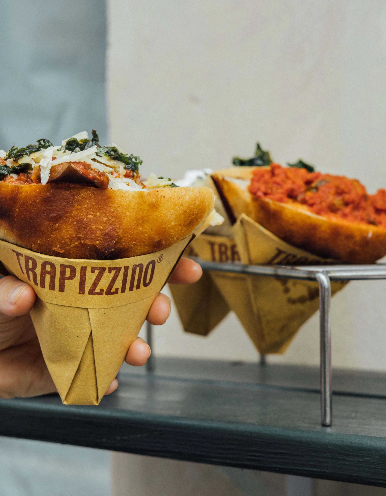
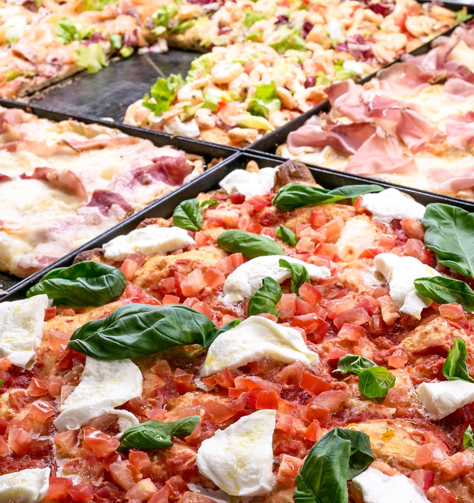
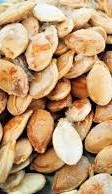
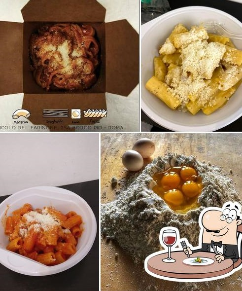

It is a pizza dough cut with a triangle shap, and inside you can put whatever you want. Some of your choices are: Polpetta, Parmigiana, Chicken cacciatore and so many others.
It is a pizza that they cut for you and give your piece, you can eat it while you are walking or in a bench.
It is a typical Jewish snack. They are roasted salated pumpkin seeds.
It is a homemade pasta with whatever sauce you want. Make shure you tried carbonara and matriciana!
